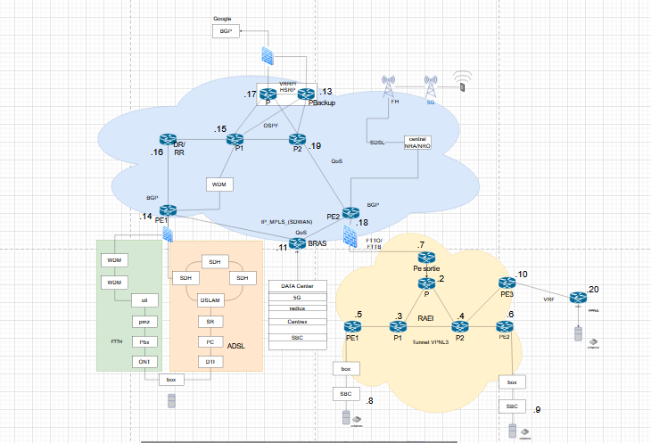
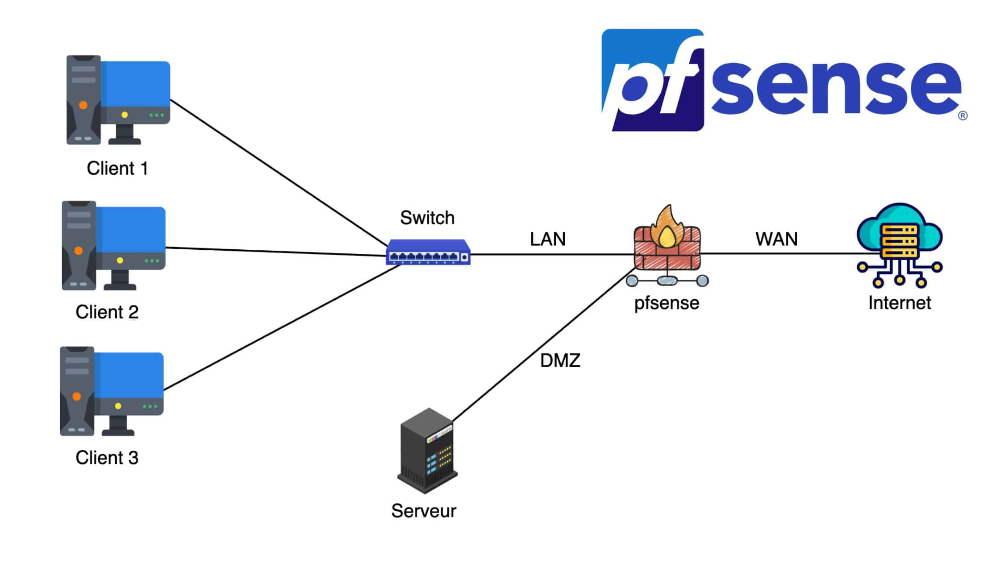
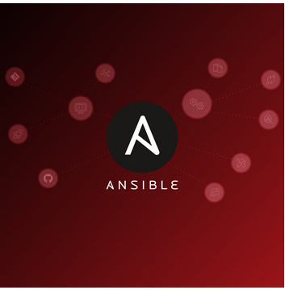
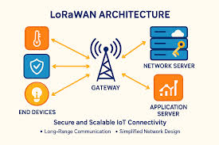
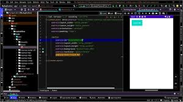

Études de cas & Réalisations
Déploiements d'infrastructures simulées et automatisées, démontrant ma capacité à concevoir et sécuriser des environnements complexes.

Infrastructure Cœur de Réseau FAI
Configuration d'une infrastructure opérateur complexe avec isolation des flux clients (VRF) et tunnel L3VPN inter-sites.

Architecture d'Entreprise
Déploiement complet d'une infrastructure sécurisée (VLANs, OSPF, Wi-Fi RADIUS, services Web) et supervision.

Architecture Sécurisée : pfSense
Segmentation réseau, création de zone DMZ, filtrage strict et publication sécurisée de services internes (PAT/NAT).
Hardening Active Directory
Déploiement de contrôleurs redondants (RODC) et durcissement du parc via des stratégies de restriction logicielle.

DevOps : Infra as Code (Ansible)
Provisionnement automatisé d'équipements Cisco et serveurs Linux (adressage, DHCP, PAT) via Playbooks YAML.
ITSM : Centre de Services GLPI
Administration d'une solution de gestion de parc et de ticketing basée sur la méthode ITIL (Incidents, Changements).
Communications Unifiées VoIP
Mise en œuvre d'une infrastructure de téléphonie IP complète et sécurisée pour la collaboration d'entreprise.

Réseau IoT & LoRaWAN
Mise en place d'un réseau de capteurs LoRaWAN à basse consommation pour le suivi en temps réel d'objets connectés.

Application Android TCP/IP
Développement d'une application mobile client/serveur communicante exploitant le réseau pour l'échange de données.